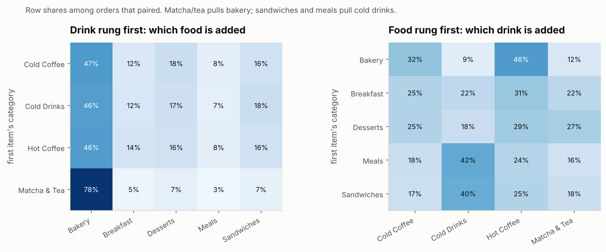

<section id="found" data-transition="fade" style="background:#fcfcfb;color:#1c211a;font-family:'IBM Plex Sans', Arial, sans-serif;padding:128px;display:flex;flex-direction:column;gap:28px">
<p style="font-size:24px;font-weight:600;letter-spacing:3px;text-transform:uppercase;color:#3f6b2f">What we found</p>
<h2 style="font-family:'Bricolage Grotesque', Arial, sans-serif;font-size:72px;font-weight:800;line-height:1.1;letter-spacing:-1px">What people add is predictable</h2>
<div style="display:flex;flex-direction:row;gap:20px">
<p style="font-size:28px;font-weight:600;background:#e6eedf;color:#2c4a20;padding:10px 22px;border-radius:999px">Matcha or tea → pastry 78%</p>
<p style="font-size:28px;font-weight:600;background:#e6eedf;color:#2c4a20;padding:10px 22px;border-radius:999px">Sandwich or meal → cold drink 41%</p>
</div>

<aside>When people do add a second item, the type of item is predictable from the first one. Matcha and tea drinkers add a pastry 78% of the time. Sandwich and meal buyers add a cold drink 41% of the time.</aside>
</section>
